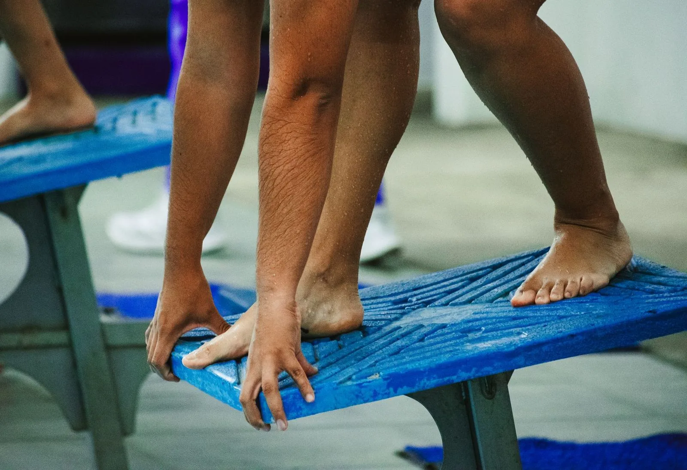
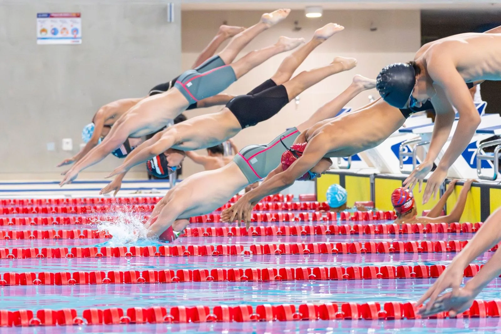
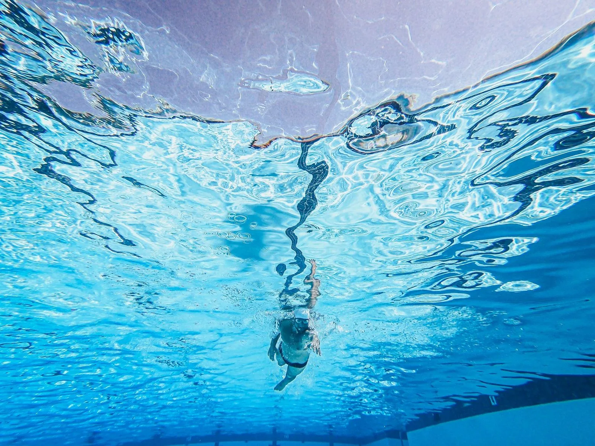
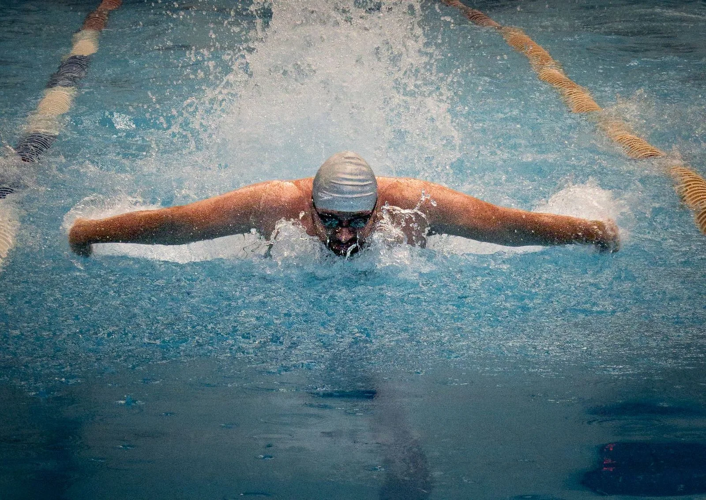
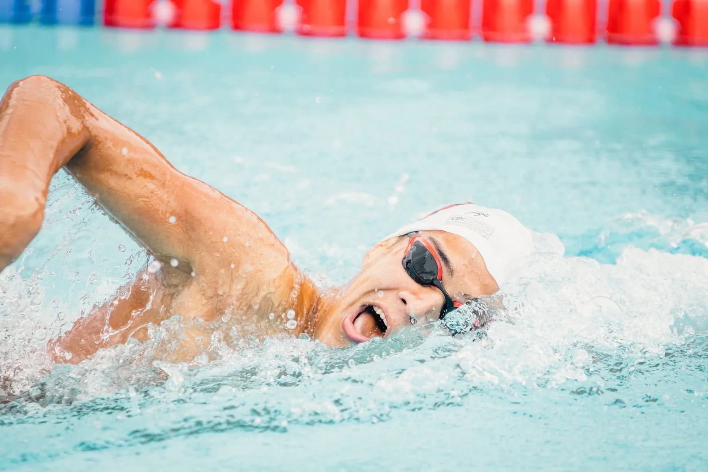
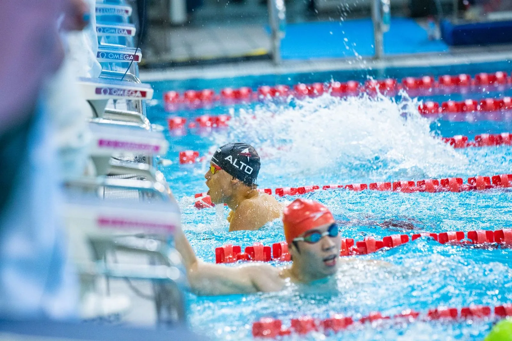
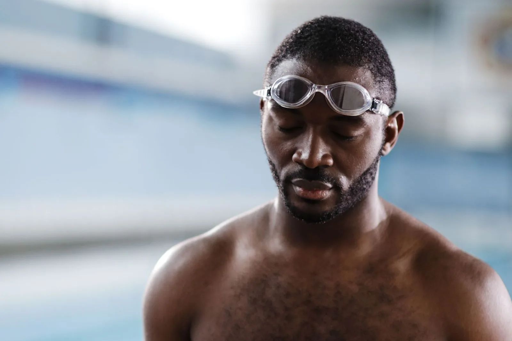

Cada centésima cuenta.
Formamos nadadores y triatletas para competir: técnica, ritmo de prueba, estrategia de carrera y acompañamiento en cada torneo. Del primer festival al campeonato.
Animación: final de 50 metros libre en cuatro carriles. El nadador de Team SER+, en el carril 4, remonta en el último tramo y toca primero por centésimas.
Así se siente una final.
Cien metros contados centésima a centésima: del silencio en el bloque al toque en la pared. Lo que se entrena todo el año pasa en menos de un minuto.
-

00.000 mEn sus marcas
El silencio antes del pitazo. Los dedos agarran el borde del bloque.
-

00.68ReacciónSalida
Una salida limpia se repite cien veces en el entrenamiento para que el día de la final salga sola.
-

06.1015 mSubacuático
Bajo el agua no hay olas. Patada de delfín hasta la marca de los 15 metros.
-

27.8450 mRitmo de prueba
El ritmo que se ensayó en cada serie, contra el reloj de la pizarra.
-

50.3085 mCuando duele
Los últimos 15 metros. Los brazos pesan, el aire falta y ahí aparece todo lo entrenado.
-

59.12100 mToque
La placa detiene el reloj. La mirada busca el tablero.
-

DespuésSuperarse
Gane o pierda, mañana se vuelve al agua. Tu rival es tu última marca.
Nadie salta etapas. La ruta al podio.
Cuatro categorías. Subes cuando tu técnica, tus tiempos y tu entrenador dicen que estás listo: nadie salta etapas.
-
Categoría 1 · 8–11 años
Aprender a nadar
Confianza, técnica en los cuatro estilos y amor por el agua.
Ver categoría -
Categoría 2 · 12–14 años
Aprender a competir
Las primeras competencias: ritmo, mejores tiempos y manejo de los nervios.
Ver categoría -
Categoría 4 · 17+ años
Alto rendimiento
Marcas significativas y escenarios nacionales e internacionales.
Ver categoría
Ruta paralela
Máster y triatlón
Para adultos de todos los niveles: natación máster en piscina y entrenamiento específico para triatletas, también en aguas abiertas.
Conoce el programaAsí se ve un entreno.
En la natación de competencia todo se escribe en la pizarra y se nada contra el reloj de ritmo. Toca una serie y mira cómo la lee un nadador.
Martes · Grupo competitivo
- calentamiento
- ritmo de prueba
- desde el bloque
- vuelta a la calma
Total: 2.000 m
8 × 100 libre @ 1:40
Próxima salida—
- ×
- Repeticiones. 8 × 100 son ocho piscinas de 100 metros.
- @
- Salida cada. Con @ 1:40 sales cada minuto y cuarenta, sin importar cuánto tardes. Lo que sobra es tu descanso.
- RP
- Ritmo de prueba. La velocidad a la que quieres nadar el día de la competencia.
Nunca compites solo.
Un torneo empieza mucho antes de la salida y termina mucho después de tocar la placa. Así lo vivimos con cada nadador.
- T−7 D
Plan de pruebas
Elegimos tus pruebas, revisamos tus marcas de inscripción y definimos la estrategia de cada carrera.

- T−1 D
Descanso y maleta lista
Activación suave, buena hidratación y todo empacado: gorro, gafas de repuesto, toalla y algo para comer.
- T−60 MIN
Calentamiento guiado
En la piscina de competencia, con el entrenador: ritmos, salidas y vueltas.
- T−15 MIN
Cámara de llamados
Confirmas serie y carril, repasas la estrategia y te concentras.

- T 0
¡Salida!
Todo lo entrenado cabe en esta carrera.
- T+5 MIN
Parciales y lectura
Revisamos contigo parciales, salida y vueltas mientras la carrera está fresca.
- T+2 D
Ajuste del plan
Lo que aprendimos en la carrera entra al entrenamiento de la semana siguiente.

Sube al bloque.
Agenda una prueba de nivel: nadamos contigo, tomamos tus tiempos y te decimos en qué nivel de la ruta empiezas y qué necesitas para subir.
- 01Evaluación de técnica en los cuatro estilos.
- 02Toma de tiempos en tus pruebas.
- 03Nivel recomendado y plan para tu primera temporada.